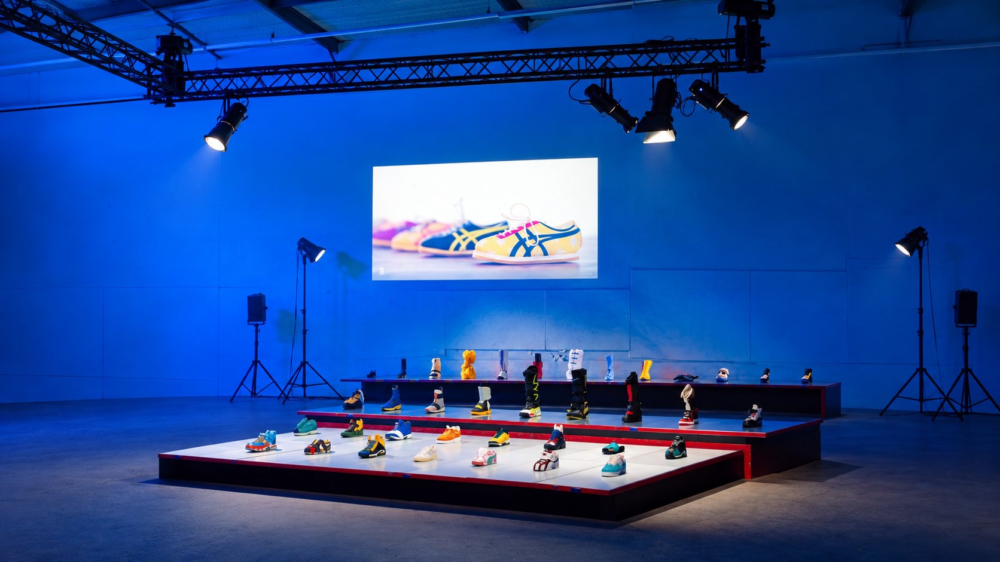

DE OPDRACHT
Een modemerk organiseerde een productpresentatie met meerdere plateaus en een DJ-moment. De ruimte moest overdag geschikt zijn voor productpresentatie en later op de avond uitnodigen tot dansen.

De uitstraling was precies zoals we wilden, clean, licht industrieel maar ook warm
Een modemerk organiseerde een productpresentatie met meerdere plateaus en een DJ-moment. De ruimte moest overdag geschikt zijn voor productpresentatie en later op de avond uitnodigen tot dansen.
HEAR verzorgde een locatiebezoek, lichtontwerp en programmering. Diverse spots, specifiek geschikt voor de theaterwereld en productdemonstraties, lichtten de sneakers, kleding en accessoires op de plateaus precies uit. Draadloze washlights kleurden de ruimte, zodat er nergens kabels zichtbaar waren en de locatie geen versterkte stroomvoorziening hoefde te leveren. Toen in de avond het licht uitging, was er een feestelijke overgang, ondersteund door lichtzuilen, spiegelbollen, nevel en een disco-dj. Dankzij een laserprojector was de nieuwe collectie nog de hele avond op de muur zichtbaar.
De opdrachtgever beschreef de gewenste uitstraling als clean en licht industrieel, zonder dat het koud wordt. Door een combinatie van strak design en warm licht is dit gerealiseerd. De dj was erg content met de nieuwste generatie mediaspelers, monitoring en PA.